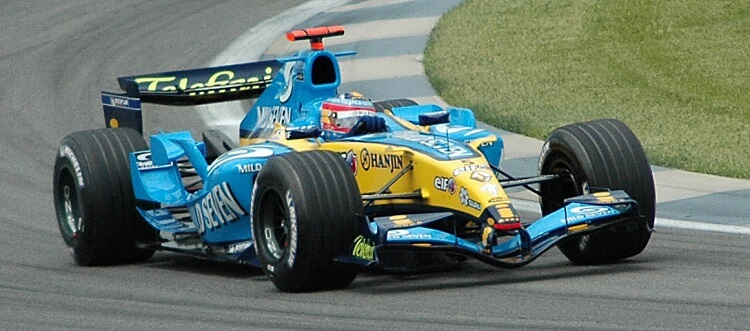

Renault R25, Mild Seven Renault Formula 1 Takımı'nın 2005 sezonunda yarıştığı Formula 1 aracıdır. Aracın şasisi Bob Bell, James Allison, Tim Densham ve Dino Toso tarafından tasarlanmıştır.
Pat Symonds, aracın mühendisliğinin yönetici direktörü olarak tasarımını ve üretimini denetlemiştir. Motor tasarımına liderlik eden Bernard Dudot olmuştur.
Bu araç, 2005 Formula 1 Sezonu'nda hem Sürücüler Şampiyonluğunu hem de Üreticiler Şampiyonluğunu kazanmıştır.
Ek olarak, 1997'deki Williams FW19'dan bu yana ilk defa Renault motorlu bir Formula 1 aracı şampiyonluk kazanmıştır.

Sezon boyunca, birçok noktada McLaren MP4-20'den daha yavaştı. Fernando Alonso ve Giancarlo Fisichella'nın üstün performansı üreticiler
şampiyonluğunun kazanılmasında rol oynadı.
Bu otomobil aynı zamanda Michelin'in Formula 1'e geri dönmesinden bu yana, Michelin kullanan araçlarda ilk Grand Prix zaferini elde etmiştir.
19 yarışlık sezonda 8 Birincilik, 6 İkincilik, 4 Üçüncülük, 7 Pol Pozisyonu, 3 En Hızlı Tur ile birlikte toplam 191 puan toplamayı başardı.
R25 aynı zamanda, bir sonraki sezonda zorunlu olarak 7 vitesli vites kutusuna geçmeden önce, 6 vitesli vites kutusu kullanan son Renault Formula 1 otomobiliydi.